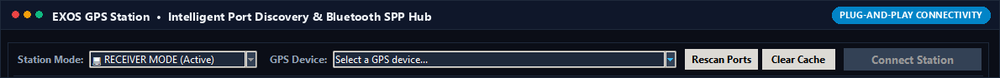

PLUG-AND-PLAY HARDWARE HUB
Intelligent Port Discovery & Bluetooth SPP Bridge
Connect any GPS receiver to your Windows workstation in seconds without device manager headaches.
Traditional serial GPS software requires manual COM port matching, baud rate guessing, and registry digging. EXOS GPS Station eliminates this friction with an automated Windows Plug-and-Play (PnP) hardware scanner that enumerates all attached USB-to-Serial interfaces and RFCOMM Bluetooth Serial Port Profile (SPP) links instantly.
- Automated PnP Hardware Scanner: 1-click port re-scan detects newly connected GPS dongles, RTK receivers, and handhelds.
- Bluetooth SPP Cache Flusher: Purges stale or orphaned Windows Bluetooth serial ports with a single click.
- Multi-Role Station Architecture: Toggle instantly between Autonomous Receiver Mode and Network Relay modes.
Field Operational Scenario: In high-pressure operations, plugging in a replacement GPS puck requires just clicking Rescan Ports and Connect Station. The system binds the serial stream and locks onto telemetry immediately.

Native UI Crop • Hardware Connection Center
100% UNCOMPRESSED CRISP